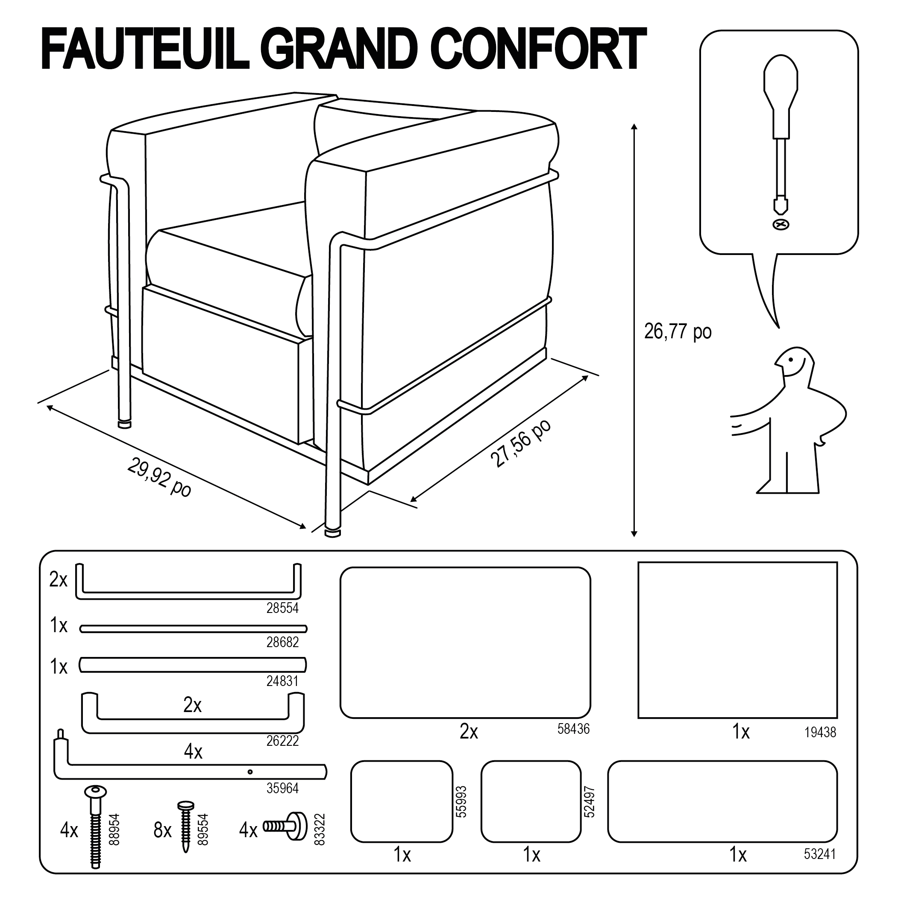
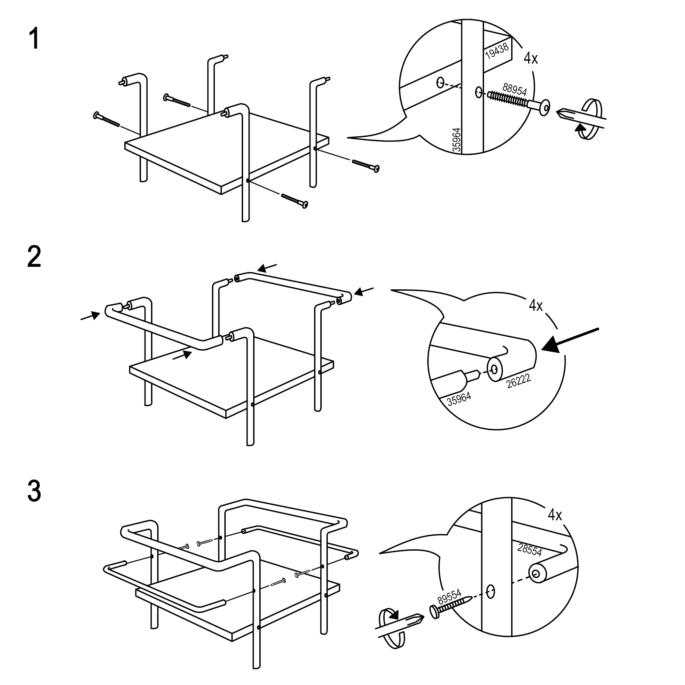
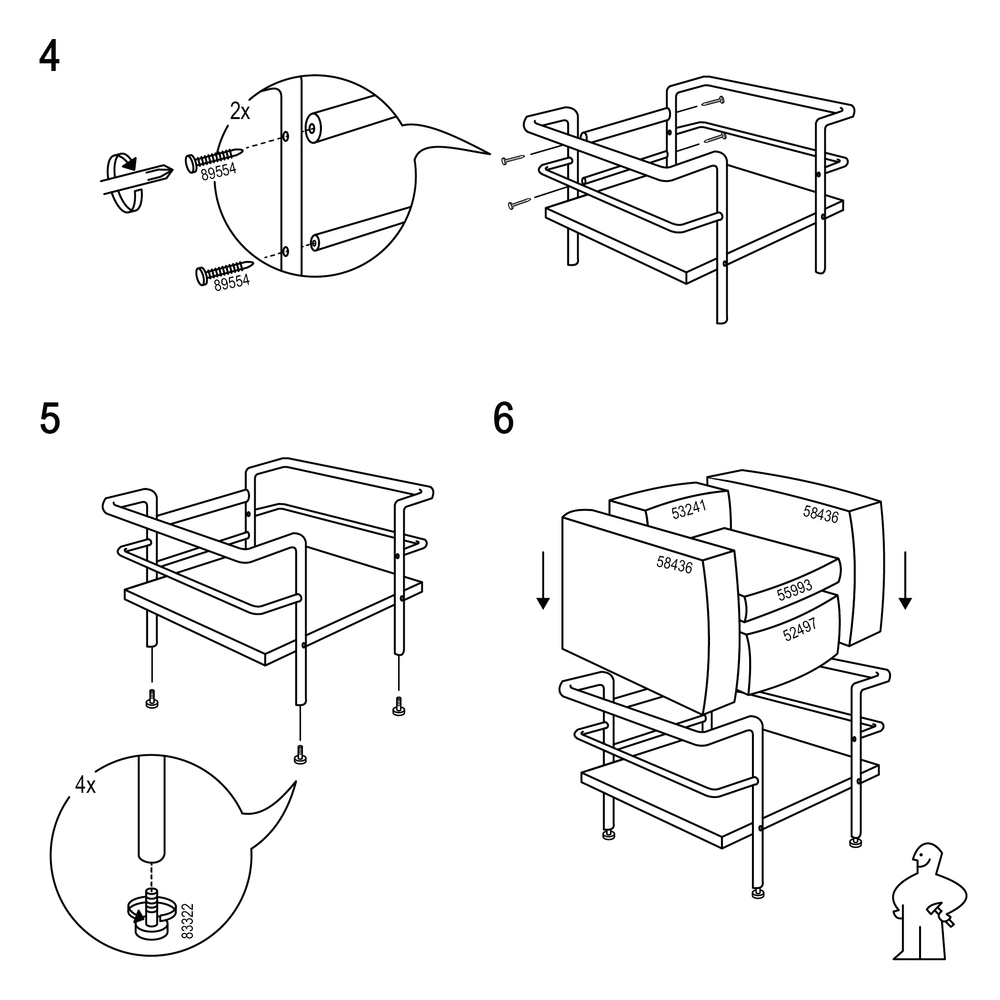
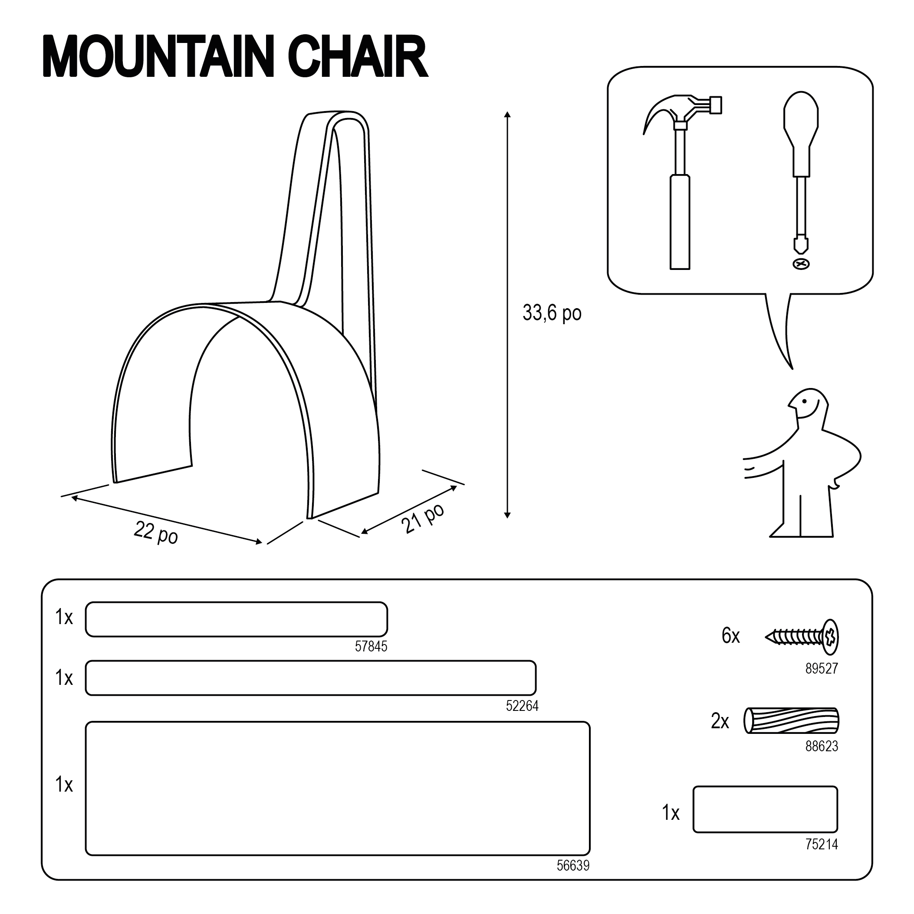
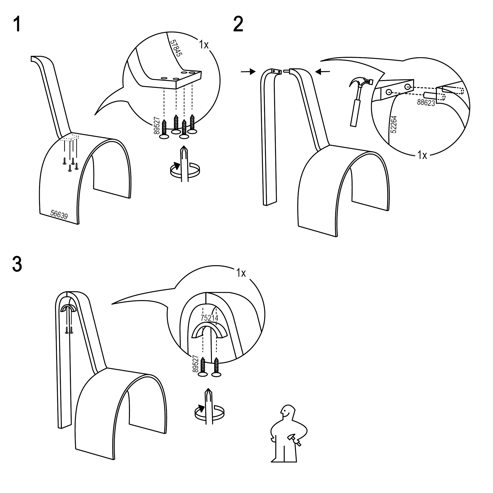

L'assise des femmes
.2023
Instructions fictives pour l'assemblage de mobiliers de maison créés par des femmes afin de redonner visibilité à leur art dans un domaine dominé par les hommes. Fauteuil Grand Confort, 1928 par Charlotte Perriand. Mountain Chair, 2019 par Tiarra Bell. Illustrations vectorielles.




